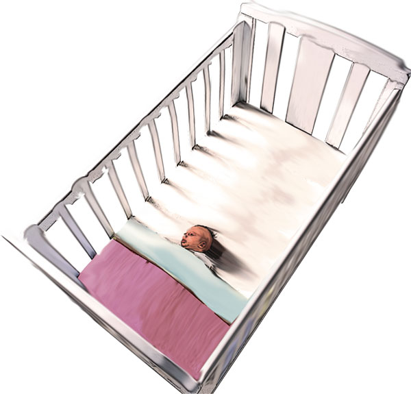

Sudden Infant Death Syndrome (SIDS)
Sudden Infant Death Syndrome (SIDS)
SIDS is defined as "The sudden and unexpected death of an infant under 1 year of age, with onset of the lethal episode apparently occurring during sleep, that remains unexplained after a thorough investigation including performance of a complete autopsy, and review of the circumstances of death and the clinical history. SIDS occurs in infants usually in the one to twelve month age group.
A great deal of research has been carried out on SIDS and, although no sure method of prevention has been discovered, experts have devised a list of risk factors. According to Sids and Kids, since the Reducing the Risk of SIDS program was first introduced in Australia in 1990, SIDS deaths have reduced by 84% in Australia. In 1989, 513 babies died of SIDS. In 2003 this number had dropped to 73.
Three ways to reduce the risk of SIDS:
1. Put the baby on the back to sleep.The risk of SIDS is increased if babies sleep on their belly or side. Babies are best placed on their backs to sleep.
2. Make sure the baby's head remains uncovered during sleep. If a baby's head becomes covered during sleep the risk of SIDS is increased. Loose bedding material can cover the baby's head, so ensure that you securely tuck the baby in so that they can not slip under the bedclothes. Consideration should be given to:
making sure the baby's head remains uncovered during sleep
not putting the baby on a water bed or bean bag
taking a baby into an adult bed may be unsafe:
 the baby may get caught under the bedding or pillows
the baby may get caught under the bedding or pillows
 become trapped between the wall and the bed
become trapped between the wall and the bed
 fall out of bed
fall out of bed
 be rolled on by someone who sleeps very deeply or who has taken medicine, drugs or alcohol that can cause them to sleep heavily
be rolled on by someone who sleeps very deeply or who has taken medicine, drugs or alcohol that can cause them to sleep heavily
placing the baby on the back to sleep
using a firm, clean, well-fitting mattress
tucking in the baby's bedclothes securely
positioning the baby's feet at the bottom of the cot
not using quilts, doonas, duvets, pillows, soft toys and cot bumpers in the cot
3. Keep the baby smoke free, before and after birth.
The risk of SIDS is increased if the mother smokes during pregnancy. There is also some evidence to suggest that if fathers smoke while the mother is pregnant the risk of SIDS is increased.
A SIDS death affects all who are involved. Parents and near relatives become distraught, especially as there appears no reason for the death. Friends and neighbours are also affected, and the attending ambulance crew, police and medical staff are not unaffected. It is a highly emotional incident, and as a first aid provider, perhaps with initial contact, you are also at risk of emotional involvement. It is difficult, but you will be expected to provide support for others, and your objectivity may be tested.

Signs and Symptoms
 no signs of circulation
no signs of circulation
 unconscious
unconscious
 absent respirations
absent respirations
 absent pulse
absent pulse
 cyanosis (bluish colour)
cyanosis (bluish colour)

Care and Treatment
 quickly and carefully examine the infant
quickly and carefully examine the infant
 if in doubt, ATTEMPT RESUSCITATION
if in doubt, ATTEMPT RESUSCITATION
 leave the infant as found, avoid disturbing bedclothes
leave the infant as found, avoid disturbing bedclothes
 contact ambulance and advise 'suspected SIDS'
contact ambulance and advise 'suspected SIDS'
 comfort parent(s), assist in obtaining support, relatives, etc
comfort parent(s), assist in obtaining support, relatives, etc
 remain on scene until police arrive and provide information
remain on scene until police arrive and provide information
In Australian States and Territories police become involved in an unexpected death automatically as it becomes the subject of a Coroner's Investigation. The attending police officers will advise the child's parents of all necessary formalities.
The police offices are not there to indicate or attribute blame.
If you are unfortunate enough to become involved in a SIDS case, you have been involved 'at the sharp end'. Although you may not think so, you have been emotionally affected. Ensure that you talk the incident through with somebody, especially with someone who will understand. If you don't know anyone close with whom you may wish to share your feelings, contact the ambulance crew who attended. They will be only too willing to share it with you – they understand your feelings and know what an emotional trial it has been.
For more information, contact SIDS and Kids for written material, support or advice.
Useful Resource
Sids and Kids
 1300 308 307
1300 308 307
http://www.sidsandkids.org